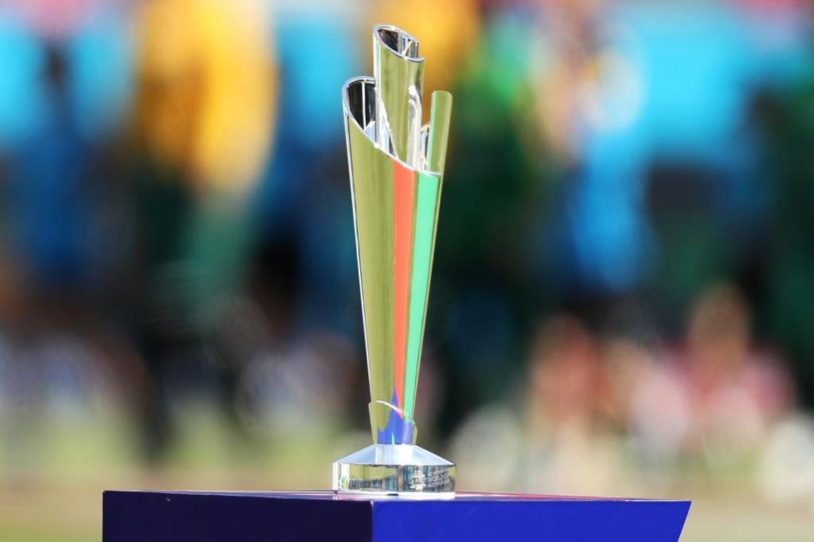

The 2024 ICC Men's T20 World Cup was the ninth edition of the ICC Men's T20 World Cup. It was co-hosted by the West Indies and the United States from 1 to 29 June 2024; the tournament being hosted by the West Indies for the second time, while this was also the first major ICC tournament to feature matches played in the United States.
he tournament field expanded from 16 to 20 teams, including the two hosts, the top eight teams from the 2022 edition, the best placed two teams in the ICC Men's T20I Team Rankings not already qualified, and eight other teams determined by regional qualifiers. Canada and Uganda qualified for the men's T20 World Cup for the first time, while the United States participated for the first time by virtue of being co-hosts.
In December 2023, a delegation of representatives from the ICC undertook an inspection of the confirmed host venues in the Caribbean and the United States, so as to finalize the fixtures for the tournament. The Long Island stadium was slated to host the India–Pakistan group stage match, considered one of the largest rivalries in the sport.[48][49] On 17 January 2024, the ICC unveiled the proposed design of the temporary New York stadium—Nassau County International Cricket Stadium—which was completed in May 2024 in time for the tournament.[39][50] It marked the first temporary venue to have ever been used during an ICC World Cup.[50]
click here to know more